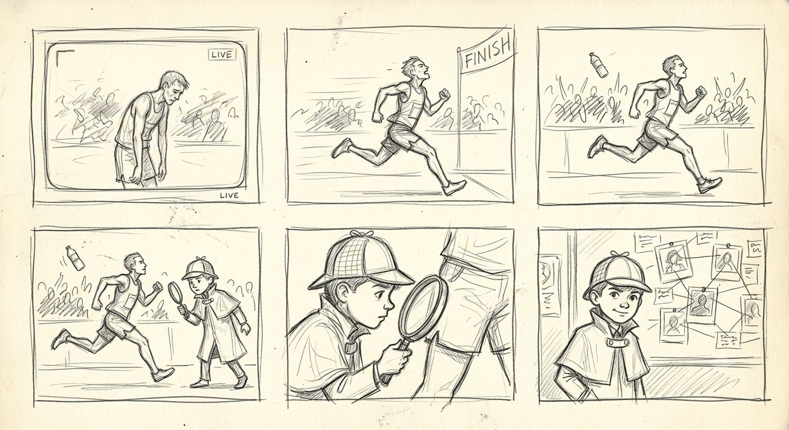
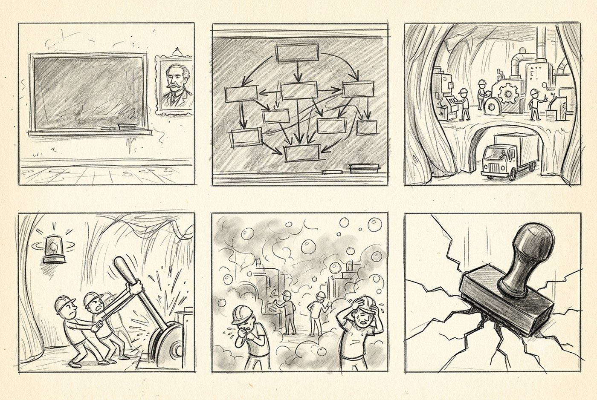
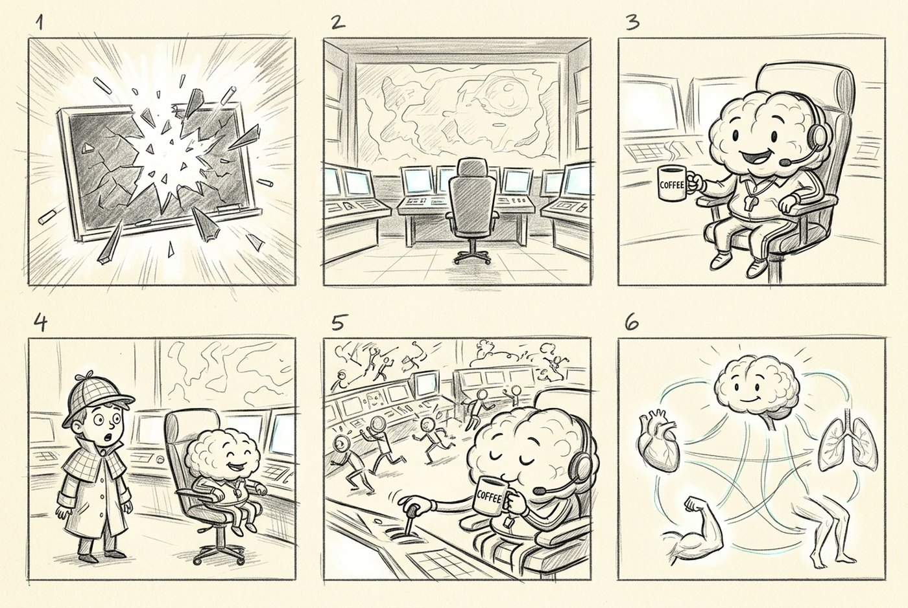
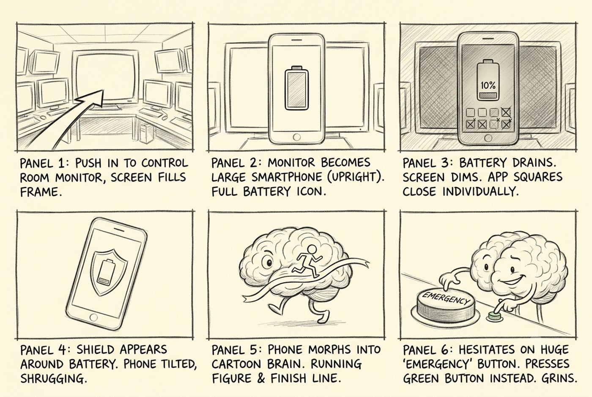
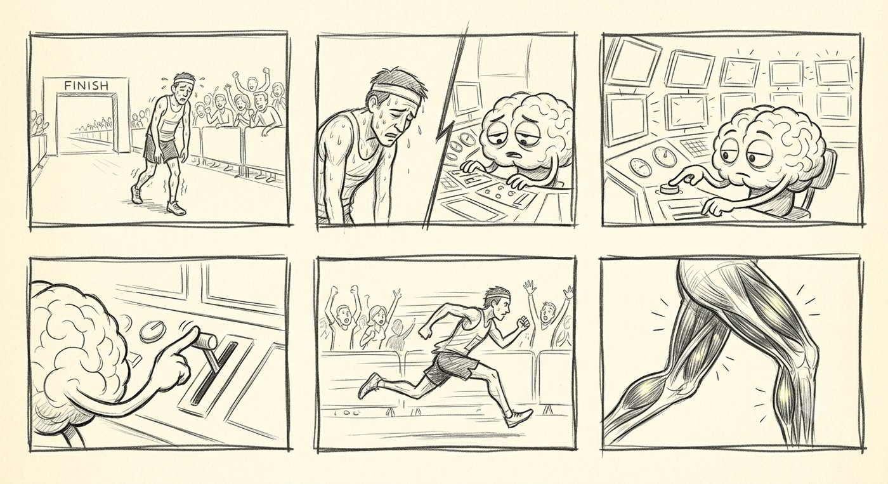
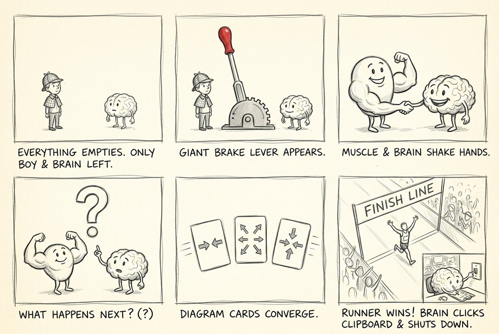

The Brain Brake · boards · private
Script zero, the original, six scenes, boarded 11.8.2026
This is the film as Manan first wrote it, before anything was rebuilt. Each scene carries a storyboard sheet of six thumbnails, a short summary of what the scene is doing, and the original script text underneath, unedited.
SCENE 1 OF 6
0:00 – 0:20
A live marathon broadcast. A man with nothing left suddenly sprints, and the world stops so a boy in a deerstalker can walk into the frozen race and ask where that came from. The hook is a question, and the question is asked out loud, to camera, by a detective.

Scene 1 — THE MYSTERY Approximate time duration: 0:00–0:20 (seconds) Initial Objective: To hook the viewers immediately, within the first five seconds, with an impossible question. The viewers should instantly think, “Really.…is that true?” Storyline: A professional sports broadcast. A Marathon. An athlete is barely running, he looks totally exhausted. Commentator: “He seems to have got absolutely nothing left…” Suddenly—The runner just before the finish line launches into a remarkable sprint. Freeze. Everything freezes. Only Manan moves. He steps into the frozen race with a detective’s magnifying glass, making a dramatic entry. (Plan Manan’s attire to be similar to Sherlock Holmes.) Manan examines the runner. Then he looks at the camera. “Hold on…” “If he’s completely exhausted…” (long pause) “…where did THAT come from?” Question marks explode across the screen. A detective board appears. Title slams onto screen. WHERE DID THAT COME FROM? Then… THE BRAIN BRAKE Based upon one influential science concept: The Central Governor Theory
SCENE 2 OF 6
0:20 – 0:40
The board opens a case file and the film goes to school. A dusty chalkboard, a portrait of Hill, a flowchart that builds itself, and then the leap that carries the whole scene: the muscle becomes a factory with workers, trucks, an alarm and a lever. The theory is made believable, stamped closed, and then cracked.

Scene 2 — THE OLD THEORY Approximate time duration: 0:20–0:40 (seconds) Objective: Present the traditional explanation scientists believed for decades. Make the viewers believe it. Then show the crack in the theory. Storyline: Manan opens The detective board zooms into CASE FILE #1: MUSCLES Everything transforms into an old classroom setting. Depict a dusty chalkboard experience. The Physiologist A.V. Hill’s black-and-white picture appears. A Nobel Prize Winner. 1923— A. V. Hill’s Traditional Theory of Fatigue Simple animated flowchart builds itself. (Draw flowchart with visuals on screen) Animated Chalkboard Flowchart 🏃♂️RUN FASTER │ ▼ 🫁MORE OXYGEN NEEDED BY MUSCLES │ ▼ ⚠️NOT ENOUGH OXYGEN │ ▼ ⚡EMERGENCY ENERGY MODE (Anaerobic Glycolysis) │ ▼ 🧪LACTATE + H⁺ (Hydrogen ions) BUILD UP IN MUSCLES │ ▼ 💪MUSCLES PRODUCE LESS FORCE │ ▼ 😫FATIGUE │ ▼ 🛑STOP RUNNING Animation As the flowchart builds… The runner becomes a cartoon. His muscles are tiny factory workers. The oxygen delivery trucks arrive. At first— Truck… Truck… Truck… Everything is running smoothly. Suddenly— Not enough trucks arrive. A loud factory alarm rings. “⚠️ OXYGEN SHORTAGE!” Tiny workers panic. They pull a giant lever labelled BACKUP POWER Bright sparks fly. Machines keep running… …but smoke begins filling the factory. Purple bubbles labelled Lactate + H⁺ start floating everywhere. The workers cough dramatically. One wipes sweat from his forehead. Production slows. The muscle factory begins moving in slow motion. Manan says: “For years, this seemed like the leading explanation.” “ A. V. Hill suggested that fatigue begins in your muscles.” “Scientists thought the muscles decided when the race was over.” “Your muscles switch to a backup way of making energy when oxygen becomes limited.” “Eventually…” “Your muscles can’t produce force as effectively…” “So you slow down…” “And finally…stop running” CLASSIC THEORY Everything receives a giant stamp. CASE CLOSED. Beat. Action Replay: The marathon sprint. The stamp cracks. Manan quietly says: “…except…” “…it doesn’t explain this.” Except…” (Long pause.) “If his muscles had already reached their limit…” (Points to the sprint.) “Where did THAT come from?” The word THAT slams into the chalkboard. The board shatters. Behind it… …rows of glowing computer monitors begin switching on. Beep. Beep. Beep. A mysterious silhouette is sitting in front of them. The chair slowly turns… Cut to black.
SCENE 3 OF 6
0:40 – 1:15
The blackboard shatters into mission control. Screens, maps, soft beeping, a chair that turns, and Coach Brain in a tracksuit with a whistle and a coffee mug. This is the emotional centre of the original: the antagonist turns out to be a friendly professional who has been watching every second and is on your side.

Scene 3 — THE NEW SUSPECT Approximate time duration: 0:40–1:15 (seconds to minutes) Objective: Reveal Super Coach Brain. This is the emotional centre of the film. Introduce the Central Governor Theory through an unforgettable character. The viewers should immediately understand that, according to one influential theory, the brain is constantly monitoring the body and adjusting effort to keep it safe—not to stop you, but to help you finish. Storyline: The cracked chalkboard from Scene 2 suddenly shatters. Instead of darkness… Behind it is a futuristic Mission Control Room. Everything glows blue. A digital map of the marathon fills one screen. Screens everywhere depicting: Heartrate. Body Temperature. Water. Oxygen (SpO2). Blood Pressure. Soft electronic beeps fill the room. The camera slowly pushes forward. A large chair begins turning. Super Coach Brain spins around. A cheerful cartoon brain wearing • a tracksuit • a coach’s whistle • a headset microphone • running shoes He calmly sips coffee. His Coffee reads: WORLD’S MOST OVERPROTECTIVE COACH Manan looks totally shocked: “You’ve been watching this whole race?” Brain: “Every second.” He smiles confidently without looking surprised. Coach Brain snaps his fingers and every monitor comes alive. Tiny workers panic. Worker 1: “The temperature and blood pressure is rising!” Worker 2: “The water is getting low!” Worker 3: “Twenty meters to go still!” The Mission Control room feels like NASA just before a rocket launch. But the brain calmly drinks coffee. Moves one tiny lever set on the machine board. Power 100% ↓ 82% The runner settles into pace. Animation Back in the marathon… The runner doesn’t stop. He doesn’t collapse. He simply settles into a sustainable pace. The audience immediately understands the lever. Manan: “So you are controlling my muscles?” Brain: “I’m not trying to stop you.” “I’m trying to get you to the finish line.” Manan: “So…you’re secretly pacing me?” The brain smiles. Coach Brain: “One influential scientific theory suggests…” “I’m constantly collecting information from all over your body.” As he speaks… Thin glowing lines connect every body system to Coach Brain. Heart❤️ Muscles 💪 Lungs 🫁 Temperature 🌡️ Water 💧 Energy ⚡ Distance 🏁 Everything connects into one giant network. Coach Brain “Every heartbeat.” Click. “Every breath.” Click. “Every drop of sweat.” Click. “Every step.” Click. “I’m asking one question…” The control room goes quiet. The camera slowly zooms in. A giant screen lights up. CAN WE KEEP GOING SAFELY? Coach Brain “If the answer is yes…” Green light. “We keep going.” “If the answer starts becoming…” Yellow warning light flashes. “Maybe…” He points towards a silver lever. The lever is labelled POWER OUTPUT “According to the Central Governor Theory…” “Maybe.” Humour Coach Brain suddenly blows his whistle. “Easy!” The runner slows slightly. A second later… Coach Brain checks another monitor. Distance Remaining 18 metres He grins. “Okay…” “Now we’re talking.” He hovers his hand over a giant green button. The button reads GO But he doesn’t press it yet. He winks at the audience. “Almost…” Transition The camera zooms into one of the Mission Control monitors. The monitor transforms into… A smartphone battery. 100% ↓ 82% ↓ 42% ↓ 20% A notification appears. LOW POWER MODE Coach Brain smiles. “You’ve seen this before…”
SCENE 4 OF 6
1:15 – 1:40
An ordinary analogy does the explaining. A monitor becomes a phone, the battery drains, low power mode arrives, apps close themselves, a shield appears. The audience recognises their own pocket, and the physiology stops being physiology.

SCENE 4 — YOUR PHONE ALREADY KNOWS THIS Approximate Time Duration: 1:15–1:40 (minutes) Objective: Use an ordinary analogy that every spectator understands easily. Explain the Central Governor Theory without using complicated physiology. The audience should think, “Oh… my phone already does this. Maybe my brain could too.” Storyline The giant Mission Control monitor zooms closer and closer… Until it completely fills the screen. Suddenly— The monitor transforms into a giant Apple cell phone. The battery icon begins dropping. 100%… 82%… 42%… 20%. A notification pops onto the screen. ⚡ LOW POWER MODE ACTIVATED The phone becomes slightly dimmer. Background apps quietly close themselves. Animations slow down. The processor yawns dramatically. Manan: “Has my phone broken?” The phone shakes its head. “Nope.” “I’m safeguarding myself.” “If I utilize all my power now…” “I might not last when you really need me.” A tiny shield appears around the battery. The words appear underneath. “PROTECTING BATTERY” Visual Transition The phone slowly morphs back into Super Coach Brain. The battery icon converts into a runner. The shield transforms into a finish line. Super Coach Brain smiles knowingly. Coach Brain: “According to one influential theory…” “Fatigue may work a little like Low Power Mode.” He doesn’t touch the giant red STOP button. Instead… He gently nudges the POWER OUTPUT lever down a tiny amount. The runner keeps moving. Just slightly slower. Animation Three warning lights briefly flash on the monitors. 🌡️ Temperature Rising ❤️ Heart Working Harder and Blood Pressure Higher 💧 Water Running Low Coach Brain calmly watches them. He comments: “No panic. No alarms. Maybe…Ease off a little.” A speech bubble appears beside him. “Let’s save something for the finish.” The audience smiles. Manan: “So you’re not forcing me to stop…” “You’re helping me avoid pushing too far?” Coach Brain nods approvingly and says: “That’s the idea. The feeling of fatigue may not be a sign that your body has failed…It may be your brain encouraging you to slow down before real danger begins.” Scientific Accuracy Note A small subtitle appears briefly at the bottom of the screen. One influential scientific theory proposed by Professor Tim Noakes. Scientists continue to debate exactly how the brain and muscles work together to produce fatigue. The subtitle fades away after two seconds. Humour Coach Brain reaches toward a giant red emergency button labelled: TOTAL PANIC He stares at it… trying to tease Manan and wants to observe his reaction. Seeing Manan a bit anxious, he ignores it and instead he presses a tiny green button labelled: 🙂 “Take It Easy.” The runner simply relaxes into a comfortable pace. Super Coach Brain grins proudly. “See?” “Much better.” Transition to Scene 5 The phone battery graphic shrinks into the corner of the screen. Its battery level remains at 20%. The battery suddenly begins counting distance instead of percentage. 20 metres remaining… 19… 18… The phone transforms back into the marathon race. The finish line appears ahead. Coach Brain leans forward in his chair. He smiles. “Now…” “Let’s see what happens when we’re almost home.”
SCENE 5 OF 6
1:40 – 1:55
Back to where we started, with the answer in hand. A split screen holds the runner and the control room together, the safety check comes back green, and the lever goes to ninety five and never to a hundred. Then the sprint, the speed lines, and the legs turned transparent so the fibres can be seen lighting up.

SCENE 5 — BACK TO THE MARATHON Approximate Time Duration: 1:40–1:55 (minutes) Objective: Return to the mystery from the opening scene and show how the Central Governor Theory explains the famous “final sprint.” The audience should finally think: “Oh… that’s where the extra speed came from!” Storyline The smartphone gradually disappears from the scene. Its battery icon transforms into a digital race clock. The camera zooms back onto the marathon course. The runner is exactly where we first met him. Sweating. Breathing heavily. His legs are trembling. The finish line is now only a few metres away. The crowd begins counting together. “Five…” “Four…” “Three…” The camera splits into two screens. Left Side: The exhausted runner. Right Side: Coach Brain’s Mission Control. Both scenes happen simultaneously. Animation Inside Mission Control, every monitor updates in real time. ❤️ Heart Rate: High 🌡️ Body Temperature: High 💧 Hydration: Low ⚡ Energy Stores: Low 🏁 Distance Remaining: 20 metres… 19… 18… 17… Coach Brain studies every screen calmly. No panic. No alarms. He smiles. Super Coach Brain: “Almost there…Risk is getting lower…..Time for one final check.” He presses a blue button labelled: SAFETY SCAN Every monitor flashes green. A large message appears across the control room. ✅ SAFE TO PUSH A BIT MORE Coach Brain smiles proudly. Animation He gently moves the POWER OUTPUT lever. 82% ↓ 95% He never pushes it to 100%. A tiny caption appears. “Notice: Not Maximum Power.” Back to the Marathon Instantly… The runner’s stride becomes longer and faster. His posture lifts. His arms pump harder. His pace increases dramatically. Comic-book speed lines appear behind him. The crowd erupts. The commentator shouts, “Where did he find THAT burst of speed?” Manan (Smiling): “According to the Central Governor Theory…The brain didn’t suddenly create extra energy…. It may simply have been decided…” (The camera cuts between Coach Brain and the runner.) “…that it was finally safe to use a little more of the strength that already existed.” Animation & Doodles The runner briefly becomes transparent. Inside his legs… Dozens of muscle fibres begin glowing. At first… Only some fibres are active. As Coach Brain moves the lever… More fibres light up. The audience can actually see additional muscle fibres being recruited. A simple caption appears: More Muscle Fibres Recruited A tiny footnote underneath reads:“Illustration based on the Central Governor Theory.” Humour Super Coach Brain proudly folds his arms. One of the tiny Mission Control workers runs over carrying a gold medal. It reads: 🏆 WORLD’S MOST OVERPROTECTIVE SUPER COACH The worker places it around Coach Brain’s neck. Coach Brain pretends to be embarrassed. Manan chuckles and comments: “You really don’t like taking risks, do you?” Coach Brain grins: “That’s literally my job.” Visual Transition The runner crosses the finish line. Freeze frame. Everything stops once again… Just like the opening scene. But this time… The detective board returns. The original question— “WHERE DID THAT COME FROM?” slowly flips over… revealing the answer written on the back. One Influential Theory: Your Brain May Have Been Saving A Little More All Along. The words fade gently. The screen turns white.
SCENE 6 OF 6
1:55 – 2:00
White. The boy and the brain, a giant brake between them, and the muscle and the brain shaking hands instead of arguing. Three cards lay out 1923, 1997 and today, and the film ends by saying that science is not about having the answer but about continuing to test it.

SCENE 6 — THE SCIENTIFIC TWIST
Approximate Time Duration: 1:55–2:00 (minutes)
Objective: End on a memorable, thought-provoking note while maintaining scientific accuracy.
Leave the audience with one unforgettable idea:
“Science isn’t about having all the answers—it’s about asking better questions.”
Storyline
The marathon fades away.
The cheering crowd disappears.
Everything slowly turns white.
Only Manan and Coach Brain remain standing.
Between them is a giant emergency brake labelled: “FATIGUE”
On one side stands a smiling cartoon Muscle 💪.
On the other stands Super Coach Brain 🧠.
They look at each other. Instead of arguing…They shake hands.
Manan: “So… who was right?”
The Muscle shrugs.
Coach Brain smiles.
Both point to a giant question mark floating above them.
Visual
A simple comparison appears.
1923 — A. V. Hill
💪 Muscles reach their limit.
↓
Fatigue.
↓
Exercise stops.
The card slides to the left.
A second card appears.
1997 onwards — Tim Noakes’ Central Governor Theory
🧠 Brain adjusts effort.
↓
Fatigue helps protect the body.
↓
Exercise slows before serious damage.
The two cards move together.
A third card appears in the centre.
Today’s Understanding
🧠 Brain
● ●
💪 Muscles
↓
Both contribute to fatigue.
A small magnifying glass appears beside the words.
“Scientists are still investigating exactly how they work together.”
Dialogue
Manan:“That’s what I love about science.”
“Great ideas don’t become accepted because they sound convincing…”
“They become accepted because scientists keep testing them.”
Final Visual
The white background slowly transforms back into the marathon.
The runner crosses the finish line.
Freeze frame.
The camera slowly rises high above the race.
For just one second…
We peek inside Mission Control.
Coach Brain watches the finish.
He smiles.
He doesn’t celebrate.
He simply ticks one final box on his clipboard.
✅ Mission Accomplished
He quietly whispers,
“See you at the next race.”
He turns off the lights in Mission Control.
Everything fades to black.
Final Voice-over
Manan (Voice-over): “So the next time you watch an athlete find one last burst of speed…”
(Pause)
“Don’t just wonder how strong their muscles are…”
(Beat)
“Wonder what their brain believed was still safe.”
End Screen
THE BRAIN BRAKE
One Influential Theory: The Central Governor Theory
“Proposed by Professor Tim Noakes in 1997.”
Text below:
“The Central Governor Theory is an influential scientific model. Scientists continue to study how
the brain and muscles work together to produce fatigue. The concept proposes that the brain acts
as a subconscious controller to regulate physical exertion and induce fatigue, protecting the
body from permanent damage or catastrophic failure.”
*Note: “Scientists continue to investigate how the brain and muscles work together to produce
fatigue.”
Fade to black.
Then reappears with this quirky end statement:
“The strongest finish might begin with the smartest brake.”
THE BRAIN BRAKE · Mantra Productions · boards, private